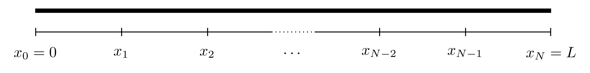
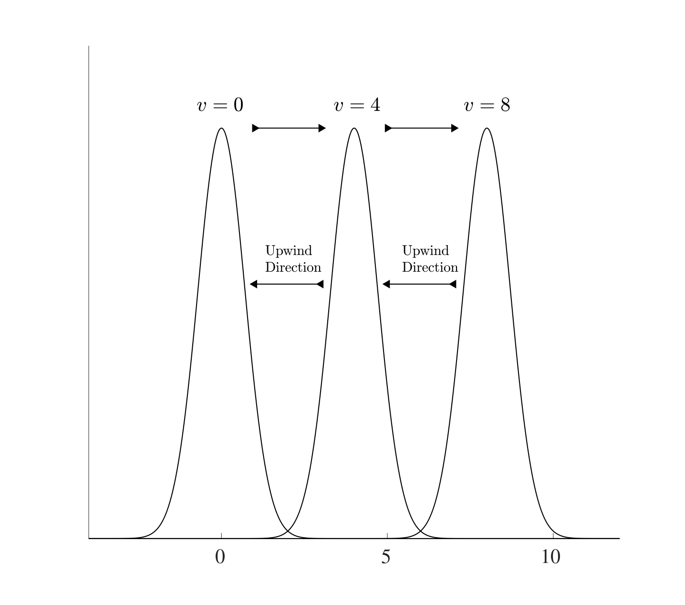
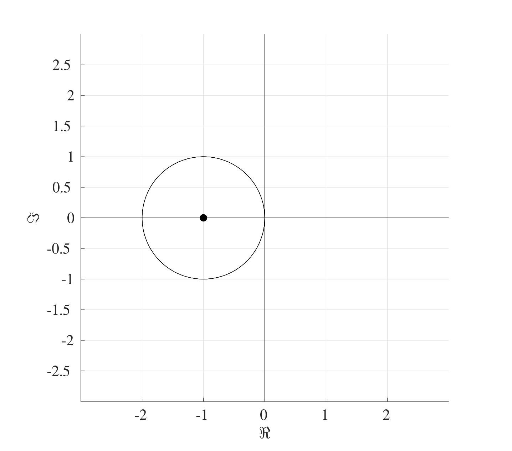
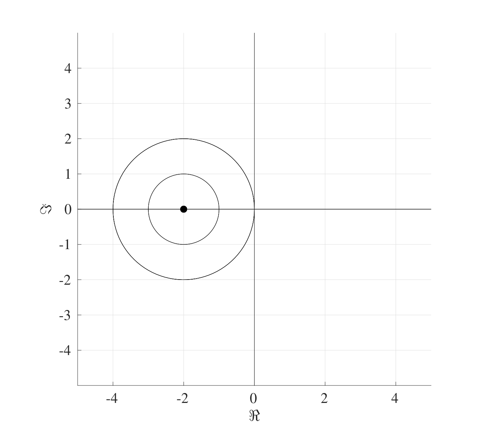
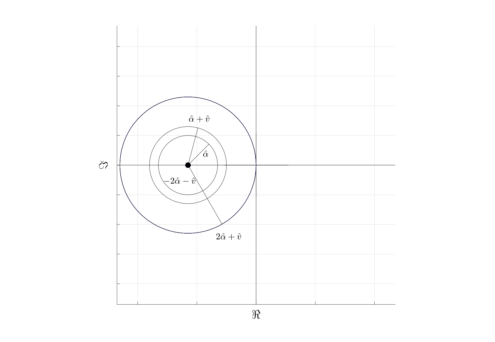

11 Heat Equation
Ordinary differential equations have been the main focus of this course so far but this will now be extended to partial differential equations. The differential equations that will be studied here are the 1-Dimensional Heat (or Diffusion) Equation and the 1-Dimensional Advection (or Convection) Equation.
The 1-dimensional heat (or diffusion) equation is a partial differential equation that represents the heat transfer across a rod and is given by \[\frac{\partial u}{\partial t}=\alpha \frac{\partial^{2} u}{\partial x^{2}} \quad \text{with} \quad 0<x<L \quad \text{and} \quad t>0\] where \(u=u(x,t)\) is the temperature at location \(x\) at time \(t\) and \(\alpha\) is the thermal diffusivity1. This equation represents the flow of heat along the length of a rod of length \(L\).
This partial differential equation has three derivatives in total, two derivatives in \(x\) and one derivative in \(t\), this means that three conditions are needed, two on \(x\) and one on \(t\):
- \(u(x,0)=u_{init}(x)\) for \(x \in [0,L]\): Initial heat distribution across the rod;
- \(u(0,t)=u_l(t)\) for \(t>0\): The temperature at the left end of the rod;
- \(u(L,t)=u_r(t)\) for \(t>0\): The temperature at the right end of the rod.
This set of conditions along with the differential equation are known collectively as an Initial-Boundary Value Problem and can be solved using the Method of Lines.
11.1 The Method of Lines for the Heat Equation
The outline of the method of lines for the heat equation is as follows:
- Divide the spatial interval \([0,L]\) into \(N_x\) equally sized sections and label the points as \(x_0, x_1, x_2, \dots, x_{N_x}\) where \(x_n=nh_x\) and the spatial interval width is \(h_x=\frac{L}{N_x}\).

Left Hand Side: For each point \(x_n\), define the approximation \(U_n(t) \approx u(x_n,t)\). Therefore the left hand side of the heat equation can be written as \[\frac{\partial u}{\partial t}(x_n,t) \approx \frac{\mathrm{d} U_n}{\mathrm{d} t}(t)\] and this holds for \(n=1, 2, \dots, N_x-1\) since \(U_0(t) \approx u(0,t)=u_l(t)\) and \(U_N(t) \approx u(L,t)=u_r(t)\) are already known from the boundary conditions. Notice that the derivative of \(U_n\) is an ordinary derivative since \(U_n\) is a function of \(t\) only.
Right Hand Side: Use the finite difference approximation to approximate the spatial derivative in the differential equation. Here, the centred difference approximation for the second derivative will be used, namely \[\frac{\partial^{2} u}{\partial x^{2}}(x_n,t) \approx \frac{U_{n+1}(t)-2U_{n}(t)+U_{n-1}(t)}{h_x^2}.\] Therefore the right hand side of the heat equation will become \[\alpha \frac{\partial^{2} u}{\partial x^{2}}(x_n,t) \approx \frac{\alpha}{h_x^2}\left[ U_{n-1}(t)-2U_n(t)+U_{n+1}(t) \right].\] This holds for \(n=1, 2, \dots, N_x-1\) bearing in mind, once again, that \(U_0(t) \approx u(0,t)=u_l(t)\) and \(U_{N_x}(t) \approx u(L,t)=u_r(t)\) are known beforehand.
These can be combined to give the discretised form of the heat equation \[\frac{\mathrm{d} U_n}{\mathrm{d} t}=\frac{\alpha}{h_x^2}\left[ U_{n-1}-2U_n+U_{n+1} \right]\] for all \(n=1,2,\dots,N_x-1\) where \(U_n=U_n(t)\). This means that the partial differential equation has been split into \(N_x-1\) ordinary differential equations.
This entire system of \(N_x-1\) equations can now be written in matrix form as \(\frac{\mathrm{d} \boldsymbol{U}}{\mathrm{d} t}=A\boldsymbol{U}+\boldsymbol{b}\) where \[\begin{multline*} \frac{\mathrm{d} }{\mathrm{d} t}\underbrace{\begin{pmatrix} U_1(t) \\ U_2(t) \\ U_3(t) \\ \vdots \\ U_{N_x-3}(t) \\ U_{N_x-2}(t) \\ U_{N_x-1}(t) \\ \end{pmatrix}}_{\boldsymbol{U}}= \underbrace{\frac{\alpha}{h_x^2}\begin{pmatrix} -2 & 1 & 0 & \dots & 0 & 0 & 0 \\ 1 & -2 & 1 & \dots & 0 & 0 & 0 \\ 0 & 1 & -2 & \dots & 0 & 0 & 0 \\ \vdots & \vdots & \vdots & \ddots & \vdots & \vdots & \vdots \\ 0 & 0 & 0 & \dots & -2 & 1 & 0 \\ 0 & 0 & 0 & \dots & 1 & -2 & 1 \\ 0 & 0 & 0 & \dots & 0 & 1 & -2 \\ \end{pmatrix}}_{A} \underbrace{\begin{pmatrix} U_1(t) \\ U_2(t) \\ U_3(t) \\ \vdots \\ U_{N_x-3}(t) \\ U_{N_x-2}(t) \\ U_{N_x-1}(t) \\ \end{pmatrix}}_{\boldsymbol{U}} \\ +\underbrace{\frac{\alpha}{h_x^2}\begin{pmatrix} u_l(t) \\ 0 \\ 0 \\ \vdots \\ 0 \\ 0 \\ u_r(t) \\ \end{pmatrix}}_{\boldsymbol{b}} \end{multline*}\] subject to the initial condition \[ \boldsymbol{U}_0=\begin{pmatrix} U_1(0) \\ U_2(0) \\ U_3(0) \\ \vdots \\ U_{N_x-3}(0) \\ U_{N_x-2}(0) \\ U_{N_x-1}(0) \end{pmatrix}\approx\begin{pmatrix} u(x_1,0) \\ u(x_2,0) \\ u(x_3,0) \\ \vdots \\ u(x_{N_x-3},0) \\ u(x_{N_x-2},0) \\ u(x_{N_x-1},0) \end{pmatrix} =\begin{pmatrix} u_{init}(x_1) \\ u_{init}(x_2) \\ u_{init}(x_3) \\ \vdots \\ u_{init}(x_{N_x-3}) \\ u_{init}(x_{N_x-2}) \\ u_{init}(x_{N_x-1}) \\ \end{pmatrix}. \] This system can now be solved using any of the IVP solvers with a temporal stepsize \(h_t\).
In essence, the Method of Lines has converted a PDE into a set of ODEs using the same techniques as BVPs and will be solved in the same way as IVPs.
11.2 Linear Advection Equation
The heat equation deals with heat transfer through diffusion throughout a material. Another way in which heat transfer can be achieved by advection (or convection) and this is given by \[\frac{\partial u}{\partial t}=-v \frac{\partial u}{\partial x} \quad \text{with} \quad 0<x<L \quad \text{and} \quad t>0\] where \(u=u(x,t)\) is the temperature at location \(x\) at time \(t\) and \(v\) is the flow speed.
This partial differential equation has two derivatives in total, one in \(x\) and one in \(t\), this means that two conditions are needed, one spatial and one temporal:
- \(u(x,0)=u_{init}(x)\) for \(x \in [0,L]\): Initial heat distribution across the rod;
- \(u(0,t)=u_l(t)\) for \(t>0\): The temperature at the left end of the rod.
Consider the PDE along with the initial condition only, namely \(u(x,0)=u_{init}(x)\) for \(x \in [0,L]\). The exact solution to this differential equation is given by \[u(x,t)=u_{init}(x-vt),\] this can be verified from the partial differential equation as follows: \[\frac{\partial u}{\partial t}=-v \frac{\partial u}{\partial x} \quad \text{at} \quad u(x,t)=u_{init}(x-vt)\] \[\begin{align*} &\text{LHS}=\frac{\partial }{\partial t}u(x,t)=\frac{\partial }{\partial t}\left( u_{init}(x-vt) \right)=-vu_{init}'(x-vt)\\ &\text{RHS}=\frac{\partial }{\partial x}u(x,t)=\frac{\partial }{\partial x}\left( u_{init}(x-vt) \right)=-vu_{init}'(x-vt). \end{align*}\] This means that if the initial heat profile takes the form of \(u_{init}(x)\), then after time \(t\), the profile will look exactly the same but shifted to the right by a distance \(vt\).

The “information” moves from left to right so if the finite differences are to be used, the centred differencing approach would not be suitable since the information on the right is not known yet. Therefore the backwards differencing approximation will be the most suitable. This is known as an upwind/upstream scheme (i.e. against the direction of the wind/stream) if \(v>0\). Therefore using the convention \(U_n(t) \approx u(x_n,t)\) where \(x=x_n\) is the discretisation of the spatial points for \(n=0,1,2,\dots,N_x\), the backward differencing approximation to the spatial derivative is \[\frac{\partial u}{\partial x}(x_n,t) \approx \frac{\partial U_n}{\partial x}=\frac{U_n-U_{n-1}}{h_x}.\] Therefore is discretised advection equation is \[\frac{\mathrm{d} U_n}{\mathrm{d} t}= \frac{v}{h_x}\left( U_{n-1}-U_n \right) \quad \text{for} \quad n=1,2,\dots,N_x\] and this can be solved subject to the initial condition \[u(x,0)=u_{init}(x)\] and boundary condition \[u(0,t)=u_{l}(t)\] to give the discretised set of equations in the form \(\frac{\mathrm{d} \boldsymbol{U}}{\mathrm{d} t}=A\boldsymbol{U}+\boldsymbol{b}\) where \[\begin{multline*} \frac{\mathrm{d} }{\mathrm{d} t}\underbrace{\begin{pmatrix} U_1(t) \\ U_2(t) \\ U_3(t) \\ \vdots \\ U_{N_x-2}(t) \\ U_{N_x-1}(t) \\ U_{N_x}(t) \end{pmatrix}}_{\boldsymbol{U}}= \underbrace{\frac{v}{h_x}\begin{pmatrix} -1 & 0 & 0 & \dots & 0 & 0 & 0 \\ 1 & -1 & 0 & \dots & 0 & 0 & 0 \\ 0 & 1 & -1 & \dots & 0 & 0 & 0 \\ \vdots & \vdots & \vdots & \ddots & \vdots & \vdots & \vdots \\ 0 & 0 & 0 & \dots & -1 & 0 & 0 \\ 0 & 0 & 0 & \dots & 1 & -1 & 0 \\ 0 & 0 & 0 & \dots & 0 & 1 & -1 \\ \end{pmatrix}}_{A} \underbrace{\begin{pmatrix} U_1(t) \\ U_2(t) \\ U_3(t) \\ \vdots \\ U_{N_x-2}(t) \\ U_{N_x-1}(t) \\ U_{N_x}(t) \end{pmatrix}}_{\boldsymbol{U}}\\+ \underbrace{\frac{v}{h_x}\begin{pmatrix} u_l(t) \\ 0 \\ 0 \\ \vdots \\ 0 \\ 0 \\ 0 \\ \end{pmatrix}}_{\boldsymbol{b}} \end{multline*}\] and the initial condition is \[ \boldsymbol{U}_0=\begin{pmatrix} U_1(0) \\ U_2(0) \\ U_3(0) \\ \vdots \\ U_{N_x-2}(0) \\ U_{N_x-1}(0) \\ U_{N_x}(0) \end{pmatrix}\approx\begin{pmatrix} u(x_1,0) \\ u(x_2,0) \\ u(x_3,0) \\ \vdots \\ u(x_{N_x-2},0) \\ u(x_{N_x-1},0) \\ u(x_{N_x},0) \end{pmatrix} =\begin{pmatrix} u_{init}(x_1) \\ u_{init}(x_2) \\ u_{init}(x_3) \\ \vdots \\ u_{init}(x_{N_x-2}) \\ u_{init}(x_{N_x-1}) \\ u_{init}(x_{N_x}) \\ \end{pmatrix} \].
11.3 Convection-Diffusion Equation
The heat (or diffusion) equation dictates the spread of heat across a length of material while on the other hand, the advection (or convection) equation dictates the flow of heat in a certain direction. The combination of these two effects gives rise to the Convection-Diffusion Equation which takes the form \[\frac{\partial u}{\partial t}=\alpha \frac{\partial^{2} u}{\partial x^{2}}-v \frac{\partial u}{\partial x} \quad \text{with} \quad 0<x<L, \quad t>0.\]
Just as in the heat equation, this partial differential equation has three derivatives in total, two derivatives in \(x\) and one derivative in \(t\), this means that three conditions are needed, two on \(x\) and one on \(t\), these will be as follows:
- \(u(x,0)=u_{init}(x)\) for \(x \in [0,L]\): Initial heat distribution across the rod;
- \(u(0,t)=u_l(t)\) for \(t>0\): The temperature at the left end of the rod;
- \(u(L,t)=u_r(t)\) for \(t>0\): The temperature at the right end of the rod.
In order to discretise this system, a finite difference approximation needs to be chosen first. The centred difference approximation was used for the heat equation and the backwards difference approximation for the advection. Here, the combination of both will be used. Even though this might initially seem like an inconsistency, but in fact, this will allow the system to present a distinct stable advantage as will be seen in the next section.
This system can be discretised in exactly the same way as before, so for \(n=1,2,\dots,N_x-1\), \[\frac{\mathrm{d} U_n}{\mathrm{d} t}(t)= \frac{\alpha}{h_x^2}\left[ U_{n-1}(t)-2U_n(t)+U_{n+1}(t) \right]-\frac{v}{h_x}\left[U_n(t)+U_{n-1}(t) \right].\] This system can be written in the form \(\frac{\mathrm{d} \boldsymbol{U}}{\mathrm{d} t}=A\boldsymbol{U}+\boldsymbol{b}\) where \[\begin{multline} A=\frac{\alpha}{h_x^2}\begin{pmatrix} -2 & 1 & 0 & \dots & 0 & 0 & 0 \\ 1 & -2 & 1 & \dots & 0 & 0 & 0 \\ 0 & 1 & -2 & \dots & 0 & 0 & 0 \\ \vdots & \vdots & \vdots & \ddots & \vdots & \vdots & \vdots \\ 0 & 0 & 0 & \dots & -2 & 1 & 0 \\ 0 & 0 & 0 & \dots & 1 & -2 & 1 \\ 0 & 0 & 0 & \dots & 0 & 1 & -2 \\ \end{pmatrix} \\ +\frac{v}{h_x}\begin{pmatrix} -1 & 0 & 0 & \dots & 0 & 0 & 0 \\ 1 & -1 & 0 & \dots & 0 & 0 & 0 \\ 0 & 1 & -1 & \dots & 0 & 0 & 0 \\ \vdots & \vdots & \vdots & \ddots & \vdots & \vdots & \vdots \\ 0 & 0 & 0 & \dots & -1 & 0 & 0 \\ 0 & 0 & 0 & \dots & 1 & -1 & 0 \\ 0 & 0 & 0 & \dots & 0 & 1 & -1 \\ \end{pmatrix}, \end{multline}\] \[ \boldsymbol{U}=\begin{pmatrix} U_1(t) \\ U_2(t) \\ \vdots \\ U_{N-2}(t) \\ U_{N-1}(t) \\ \end{pmatrix}, \quad \boldsymbol{b}=\frac{\alpha}{h_x^2}\begin{pmatrix} u_l(t) \\ 0 \\ \vdots \\ 0 \\ u_r(t) \\ \end{pmatrix}+\frac{v}{h_x}\begin{pmatrix} u_l(t) \\ 0 \\ \vdots \\ 0 \\ 0 \\ \end{pmatrix}. \] and this system can be solved using an Euler iteration subject to the initial condition \(u(x,0)=u_{init}(x)\).
11.4 Asymptotic Stability
The method of lines is essentially a hybrid method that makes use of a combination between a finite difference approximation and the Euler method and is very effective at solving partial differential equations, as seen from solving the heat, advection and convection-diffusion equations. The derivation of the method of lines for the different methods builds on the very same principle and the codes can be adapted quite easily. One main issue that arises here is the choice for the stepsizes for both the spatial and temporal discretisations, i.e. the choice of \(h_t\) and \(h_x\) respectively. When both methods are combined, there needs to be a restriction on both stepsizes.
The first issue that needs to be addressed is the asymptotic stability of the heat equation and the advection equation. For arbitrarily large matrices, it may not be simple to determine if all the eigenvalues are negative since it may be computationally restrictive to do so. However, a result can be used to see if all the eigenvalues are negative without explicitly calculating them.
Theorem 11.1 (Gershgorin Circle Theorem) Let \(A\) be an \(N \times N\) given by \[ A=\begin{pmatrix} a_{11} & a_{12} & a_{13} & \dots & a_{1N} \\ a_{21} & a_{22} & a_{23} & \dots & a_{2N} \\ a_{31} & a_{32} & a_{33} & \dots & a_{3N} \\ \vdots & \vdots & \vdots & \ddots & \vdots \\ a_{N1} & a_{N2} & a_{N3} & \dots & a_{NN} \end{pmatrix}. \] On the complex plane, consider \(N\) closed discs, each centred at the locations \(a_{ii}\) for \(i=1,2,\dots,n\) (the diagonal terms) where the disc centred at \(a_{ii}\) has a radius \(R_i\) where \[R_i=\sum_{j \neq i}{|a_{ij}|}.\] Then all the eigenvalues of the matrix \(A\) will have to lie in at least one of these discs. In other words, every eigenvalues of \(A\) satisfies \[|\lambda-a_{ii}| \leq R_i \quad \text{for at least one } \quad i=1,2,\dots,n.\]
11.4.1 Stability of the Euler Method for the Advection Equation
Consider the matrix \(A_2\) of size \(N \times N\) from the advection equation \[ A_2=\begin{pmatrix} -1 & 0 & \dots & 0 & 0 \\ 1 & -1 & \dots & 0 & 0 \\ \vdots & \vdots & \ddots & \vdots & \vdots \\ 0 & 0 & \dots & -1 & 0 \\ 0 & 0 & \dots & 1 & -1 \\ \end{pmatrix}. \] Following the steps of the Gershgorin theorem, the centres of all the circles on the complex plane will be located at the diagonal terms, all of which are \(-1\). The radii of these circles are the row sums of the matrix \(A_2\) without the diagonal terms, which means that all the radii will be 1. The figure below shows the circle that results on the complex plane. Therefore regardless of what the eigenvalues might be, it is known that they will always have negative real parts and therefore the advection matrix forms an asymptotically stable system. 
Since the advection equation is asymptotically stable, a bound for the temporal stepsize needs to be found. Consider the advection equation after the discretisation \(\frac{\mathrm{d} \boldsymbol{U}}{\mathrm{d} t}=A\boldsymbol{U}+\boldsymbol{b}\) where \(A=\frac{v}{h_x}A_2\). The Euler method is numerically stable if the time step \(h_t\) satisfies \[\left\| \mathcal{I}+h_t A \right\|_{\infty} \leq 1.\] First calculate \(\mathcal{I}+h_t A\): \[ \mathcal{I}+h_t A=\mathcal{I}+\frac{vh_t}{h_x}A_2= \begin{pmatrix} 1-\tilde{v} & 0 & 0 & \dots & 0 & 0 & 0 \\ \tilde{v} & 1-\tilde{v} & 0 & \dots & 0 & 0 & 0 \\ 0 & \tilde{v} & 1-\tilde{v} & \dots & 0 & 0 & 0 \\ \vdots & \vdots & \vdots & \ddots & \vdots & \vdots & \vdots\\ 0 & 0 & 0 & \dots & 0& \tilde{v} & 1-\tilde{v} \end{pmatrix}. \] where \(\tilde{v}=\frac{vh_t}{h_x}\). Now taking the absolute value of all the terms and taking the row sums gives: \[ \mathrm{abs}\left( \mathcal{I}+\frac{vh_t}{h_x}A_2 \right)= \begin{pmatrix} |1-\tilde{v}| & 0 & 0 & \dots & 0 & 0 & 0 \\ \tilde{v} & |1-\tilde{v}| & 0 & \dots & 0 & 0 & 0 \\ 0 & \tilde{v} & |1-\tilde{v}| & \dots & 0 & 0 & 0 \\ \vdots & \vdots & \vdots & \ddots & \vdots & \vdots & \vdots\\ 0 & 0 & 0 & \dots & 0& \tilde{v} & |1-\tilde{v}| \end{pmatrix}\begin{matrix} \to \\ \to \\ \to \\ \vdots \\ \to \end{matrix}\begin{matrix} |1-\tilde{v}| \\ \tilde{v}+|1-\tilde{v}| \\ \tilde{v}+|1-\tilde{v}| \\ \vdots \\ \tilde{v}+|1-\tilde{v}| \end{matrix}. \] The row sums of the absolute terms of this matrix are \[a=|1-\tilde{v}| \quad \text{and} \quad b=|1-\tilde{v}|+\tilde{v}.\] Since it is assumed that \(v>0\), then \(b>a\) therefore, \(\left\| \mathcal{I}+h_tA \right\|_{\infty}=b=|1-\tilde{v}|+\tilde{v}\). Consider the two cases when \(1-\tilde{v}>0\) and \(1-\tilde{v}<0.\)
If \(1-\tilde{v}>0\), then \(0<\tilde{v}<1\): \[\left\| \mathcal{I}+h_tA \right\|_{\infty}=|1-\tilde{v}|+\tilde{v}=1-\tilde{v}+\tilde{v}=1.\] Therefore if \(1-\tilde{v}>0\), then \(\left\| \mathcal{I}+h_tA \right\|_{\infty}\leq 1\).
If \(1-\tilde{v}<0\), then \(\tilde{v}>1\): \[\left\| \mathcal{I}+h_tA \right\|_{\infty}=|1-\tilde{v}|+\tilde{v}=\tilde{v}-1+\tilde{v}=2\tilde{v}-1,\] therefore in this case, if \(\left\| \mathcal{I}+h_tA \right\|_{\infty}\) needs to be less than or equal to \(1\), then \[\left\| \mathcal{I}+h_tA \right\|_{\infty}\leq 1 \quad \implies \quad 2\tilde{v}-1\leq 1 \quad \implies \quad\tilde{v} \leq 1\] which contradicts with the assumption that \(\tilde{v}>1\).
Therefore, the Euler method will produce a convergent solution if \[\tilde{v} < 1 \quad \implies \quad v\frac{h_t}{h_x}<1.\] In terms of number of spatial and temporal points \(N_x\) and \(N_t\) respectively, this restriction would be \[v \frac{t_f-t_0}{L-x_0} \frac{N_x}{N_t} < 1\] So for a fixed velocity \(v\), if the time step \(h_t\) is to be halved, then the spatial step would also need to be halved as well.
11.4.2 Stability of the Euler Method for the Heat Equation
Consider the matrix \(A_1\) of size \(N \times N\) from the heat equation \[ A_1=\begin{pmatrix} -2 & 1 & \dots & 0 & 0 \\ 1 & -2 & \dots & 0 & 0 \\ \vdots & \vdots & \ddots & \vdots & \vdots \\ 0 & 0 & \dots & -2 & 1 \\ 0 & 0 & \dots & 1 & -2 \\ \end{pmatrix}. \] The steps of the Gershgorin theorem can be followed to produce the following figure on the complex plane.  Once again, this shows that all the eigenvalues will have negative real parts even though their explicit values are not known.
To determine the bound on the stepsize, consider the heat equation after the discretisation, which is \(\frac{\mathrm{d} \boldsymbol{U}}{\mathrm{d} t}=A\boldsymbol{U}+\boldsymbol{b}\) where \(A=\frac{\alpha}{h_x^2}A_1\). The Euler method is numerically stable if the time step \(h_t\) satisfies \[\left\| \mathcal{I}+h_t A \right\|_{\infty} \leq 1.\] First calculate \(\mathcal{I}+h_t A\): \[ \mathcal{I}+h_t A=\mathcal{I}+\frac{\alpha h_t}{h_x^2}A_1= \begin{pmatrix} 1-2\tilde{\alpha} & \tilde{\alpha} & 0 & \dots & 0 & 0 & 0 \\ \tilde{\alpha} & 1-2\tilde{\alpha} & \tilde{\alpha} & \dots & 0 & 0 & 0 \\ 0 & \tilde{\alpha} & 1-2\tilde{\alpha} & \dots & 0 & 0 & 0 \\ \vdots & \vdots & \vdots & \ddots & \vdots & \vdots & \vdots\\ 0 & 0 & 0 & \dots & 0& \tilde{\alpha} & 1-2\tilde{\alpha} \end{pmatrix} \] where \(\tilde{\alpha}=\frac{\alpha h_t}{h_x^2}\). Now taking the absolute value of all the terms and taking the row sums gives: \[ \mathrm{abs}\left( \mathcal{I}+\frac{\alpha h_t}{h_x^2}A_1 \right)= \begin{pmatrix} |1-2\tilde{\alpha}| & \tilde{\alpha} & 0 & \dots & 0 & 0 & 0 \\ \tilde{\alpha} & |1-2\tilde{\alpha}| & \tilde{\alpha} & \dots & 0 & 0 & 0 \\ 0 & \tilde{\alpha} & |1-2\tilde{\alpha}| & \dots & 0 & 0 & 0 \\ \vdots & \vdots & \vdots & \ddots & \vdots & \vdots & \vdots\\ 0 & 0 & 0 & \dots & 0& \tilde{\alpha} & |1-2\tilde{\alpha}| \end{pmatrix}\begin{matrix} \to \; \; \tilde{\alpha}+|1-2\tilde{\alpha}| \\ \to 2\tilde{\alpha}+|1-2\tilde{\alpha}|\\ \to 2\tilde{\alpha}+|1-2\tilde{\alpha}|\\ \vdots \\ \to \; \; \tilde{\alpha}+|1-2\tilde{\alpha}|. \end{matrix} \] The row sums of the absolute terms of this matrix are \[a=\tilde{\alpha}+|1-2\tilde{\alpha}| \quad \text{and} \quad b=2\tilde{\alpha}+|1-2\tilde{\alpha}|.\] Since \(tilde{\alpha}>0\), then \(b>a\) and therefore, \(\left\| \mathcal{I}+h_tA \right\|_{\infty}=b=2\tilde{\alpha}+|1-2\tilde{\alpha}|\). Consider the two cases \(1-2\tilde{\alpha}>0\) and \(1-2\tilde{\alpha}<0\).
If \(1-2\tilde{\alpha}>0\), then \(0<\tilde{\alpha}<\frac{1}{2}\): \[\left\| \mathcal{I}+h_tA \right\|_{\infty}=|1-2\tilde{\alpha}|+2\tilde{\alpha}=1-2\tilde{\alpha}+2\tilde{\alpha}=1,\] therefore \(\left\| \mathcal{I}+h_tA \right\|_{\infty} \leq 1\).
If \(1-2\tilde{\alpha}<0\), then \(\tilde{\alpha}>\frac{1}{2}\): \[\left\| \mathcal{I}+h_tA \right\|_{\infty}=|1-2\tilde{\alpha}|+2\tilde{\alpha}=2\tilde{\alpha}-1+2\tilde{\alpha}=4\tilde{\alpha}-1,\] therefore in this case, if \(\left\| \mathcal{I}+h_tA \right\|_{\infty}\) needs to be less than or equal to \(1\), then \[\left\| \mathcal{I}+h_tA \right\|_{\infty}\leq 1 \quad \implies \quad 4\tilde{\alpha}-1\leq 1 \quad \implies \quad\tilde{\alpha} \leq \frac{1}{2}\] which contradicts with the assumption that \(\tilde{\alpha}>\frac{1}{2}\).
This means that the Euler method produces a stable convergent solution if \[\tilde{\alpha} < \frac{1}{2} \quad \implies \quad \alpha\frac{h_t}{h_x^2}<\frac{1}{2}.\] In terms of number of spatial and temporal points \(N_x\) and \(N_t\) respectively, this restriction would be \[2 \alpha \frac{t_f-t_0}{(L-x_0)^2} \frac{N_x^2}{N_t} < 1\] So for a fixed diffusivity \(\alpha\), if the time step \(h_t\) is to be halved, then the spatial step would should be quartered.
11.5 Stability of the Convection-Diffusion Equation
Now that it has been established that both the heat and advection equations are asymptotically stable and the stepsize bounds have been found, it is time to combine both cases to tackle the convection-diffusion equation.
When discretised, the convection-diffusion equation can be written as \(\frac{\mathrm{d} \boldsymbol{U}}{\mathrm{d} t}=A\boldsymbol{U}+\boldsymbol{b}\) where the matrix \(A\) is given by \[ A=\frac{\alpha}{h_x^2}\begin{pmatrix} -2 & 1 & \dots & 0 & 0 \\ 1 & -2 & \dots & 0 & 0 \\ \vdots & \vdots & \ddots & \vdots & \vdots \\ 0 & 0 & \dots & -2 & 1 \\ 0 & 0 & \dots & 1 & -2 \\ \end{pmatrix}+\frac{v}{h_x}\begin{pmatrix} -1 & 0 & \dots & 0 & 0 \\ 1 & -1 & \dots & 0 & 0 \\ \vdots & \vdots & \ddots & \vdots & \vdots \\ 0 & 0 & \dots & -1 & 0 \\ 0 & 0 & \dots & 1 & -1 \\ \end{pmatrix}. \]
The Gershgorin theorem can be applied to the matrix \(A\) to show that all the eigenvectors have negative real parts. Indeed, \[ A= \begin{pmatrix} -2\hat{\alpha}-\hat{v} & \hat{\alpha} & 0 & \dots & 0 & 0 & 0 \\ \hat{\alpha}+\hat{v} & -2\hat{\alpha}-\hat{v} & \hat{\alpha} & \dots & 0 & 0 & 0 \\ 0 & \hat{\alpha}+\hat{v} & -2\hat{\alpha}-\hat{v} & \dots & 0 & 0 & 0 \\ \vdots & \vdots & \vdots & \ddots & \vdots & \vdots & \vdots\\ 0 & 0 & 0 & \dots & 0& \hat{\alpha}+\hat{v} & -2\hat{\alpha}-\hat{v} \end{pmatrix}. \] where \(\hat{\alpha}=\frac{\alpha}{h_x^2}\) and \(\hat{v}=\frac{v}{h_x}\). By the Gershgorin theorem, the centres of the circles will be located at the diagonal terms, namely at \(-2\hat{\alpha}-\hat{v}\) with the radii \(\hat{\alpha}\), \(\hat{\alpha}+\hat{v}\) and \(2\hat{\alpha}+\hat{v}\). The largest radius is \(2\hat{\alpha}+\hat{v}\) which means that all the eigenvalues will be negative as shown below. Therefore the convection-diffusion equation is asymptotically stable.

To find the bound for the stepsizes, consider the convection-diffusion equation after the discretisation \(\frac{\mathrm{d} \boldsymbol{U}}{\mathrm{d} t}=A\boldsymbol{U}+\boldsymbol{b}\) where \(A=\frac{\alpha}{h_x^2}A_1+\frac{v}{h_x}A_2\). The Euler method is numerically stable if the time step \(h_t\) satisfies \[\left\| \mathcal{I}+h_t A \right\|_{\infty} \leq 1.\] Calculating \(\mathcal{I}+h_t A\): \[ \mathcal{I}+h_t A= \begin{pmatrix} 1-2\tilde{\alpha}-\tilde{v} & \tilde{\alpha} & 0 & \dots & 0 & 0 & 0 \\ \tilde{\alpha}+\tilde{v} & 1-2\tilde{\alpha}-\tilde{v} & \tilde{\alpha} & \dots & 0 & 0 & 0 \\ 0 & \tilde{\alpha}+\tilde{v} & 1-2\tilde{\alpha}-\tilde{v} & \dots & 0 & 0 & 0 \\ \vdots & \vdots & \vdots & \ddots & \vdots & \vdots & \vdots\\ 0 & 0 & 0 & \dots & 1-2\tilde{\alpha}-\tilde{v} & \tilde{\alpha} & 0\\ 0 & 0 & 0 & \dots & \tilde{\alpha}+\tilde{v} & 1-2\tilde{\alpha}-\tilde{v} & \tilde{\alpha} \\ 0 & 0 & 0 & \dots & 0& \tilde{\alpha}+\tilde{v} & 1-2\tilde{\alpha}-\tilde{v} \end{pmatrix} \] where \(\tilde{\alpha}=\frac{\alpha h_t}{h_x^2}\) and \(\tilde{v}=\frac{v h_t}{h_x}\). Taking the absolute value of all the terms and adding the rows gives \[\begin{multline*} \mathrm{abs}\left( \mathcal{I}+h_t A \right)= \begin{pmatrix} |1-2\tilde{\alpha}-\tilde{v}| & \tilde{\alpha} & 0 & \dots & 0 & 0 & 0 \\ \tilde{\alpha}+\tilde{v} & |1-2\tilde{\alpha}-\tilde{v}| & \tilde{\alpha} & \dots & 0 & 0 & 0 \\ 0 & \tilde{\alpha}+\tilde{v} & |1-2\tilde{\alpha}-\tilde{v}| & \dots & 0 & 0 & 0 \\ \vdots & \vdots & \vdots & \ddots & \vdots & \vdots & \vdots\\ 0 & 0 & 0 & \dots & 0& \tilde{\alpha}+\tilde{v} & |1-2\tilde{\alpha}-\tilde{v}| \end{pmatrix}\\\begin{matrix} \to \; \; \; \; \; \; \; \; \tilde{\alpha} +|1-2\tilde{\alpha}-\tilde{v}| \\ \to 2\tilde{\alpha}+\tilde{v}+|1-2\tilde{\alpha}-\tilde{v}|\\ \to 2\tilde{\alpha}+\tilde{v}+|1-2\tilde{\alpha}-\tilde{v}|\\ \vdots \\ \to \; \; \tilde{\alpha}+\tilde{v}+|1-2\tilde{\alpha}-\tilde{v}| \end{matrix}. \end{multline*}\]
The row sums of the absolute terms of this matrix are \[a=\tilde{\alpha}+|1-2\tilde{\alpha}-\tilde{v}|, \quad b=2\tilde{\alpha}+\tilde{v}+|1-2\tilde{\alpha}-\tilde{v}| \quad \text{and} \quad c=\tilde{\alpha}+\tilde{v}+|1-2\tilde{\alpha}-\tilde{v}|.\] Since \(\tilde{\alpha}>0\) and \(\tilde{v}>0\), then \(b>c>a\), therefore, \(\left\| \mathcal{I}+h_tA \right\|_{\infty}=b=2\tilde{\alpha}+\tilde{v}+|1-2\tilde{\alpha}-\tilde{v}|\). Consider the two cases \(1-2\tilde{\alpha}-\tilde{v}>0\) and \(1-2\tilde{\alpha}-\tilde{v}<0\).
If \(1-2\tilde{\alpha}-\tilde{v}>0\), then \(2\tilde{\alpha}+\tilde{v}<1\): \[\left\| \mathcal{I}+h_tA \right\|_{\infty}=|1-2\tilde{\alpha}-\tilde{v}|+2\tilde{\alpha}+\tilde{v}=1-2\tilde{\alpha}-\tilde{v}+2\tilde{\alpha}+\tilde{v}=1,\] therefore \(\left\| \mathcal{I}+h_tA \right\|_{\infty} \leq 1\).
If \(1-2\tilde{\alpha}-\tilde{v}<0\), then \(2\tilde{\alpha}+\tilde{v}>1\): \[\left\| \mathcal{I}+h_tA \right\|_{\infty}=|1-2\tilde{\alpha}-\tilde{v}|+2\tilde{\alpha}+\tilde{v}=2\tilde{\alpha}+\tilde{v}-1+2\tilde{\alpha}+\tilde{v}=4\tilde{\alpha}+2\tilde{v}-1,\] therefore in this case, if \(\left\| \mathcal{I}+h_tA \right\|_{\infty}\) needs to be less than or equal to \(1\), then \[\left\| \mathcal{I}+h_tA \right\|_{\infty}\leq 1 \quad \implies \quad 4\tilde{\alpha}+2\tilde{v}-1\leq 1 \quad \implies \quad 2\tilde{\alpha}+\tilde{v} \leq 1\] which contradicts with the assumption that \(2\tilde{\alpha}+\tilde{v}>1\).
This means that the Euler method will produce a stable convergent solution if \[2\tilde{\alpha}+\tilde{v} < 1 \quad \implies \quad 2\alpha\frac{h_t}{h_x^2}+v\frac{h_t}{h_x}<1.\] This means that a choice can be made with regards to the bounds of the different components, for instance, the values of \(h_x\) and \(h_t\) can be chosen such that \[\tilde{\alpha}<\frac{1}{4} \quad \text{and} \quad \tilde{v}<\frac{1}{2} \quad \text{or} \quad \tilde{\alpha}<\frac{1}{3} \quad \text{and} \quad \tilde{v}<\frac{1}{3}\] or any combination thereof provided that the choices satisfy the inequality \(2\tilde{\alpha}+\tilde{v} < 1\).
Consider the convection-diffusion equation \[ \frac{\partial u}{\partial t}=0.1\frac{\partial^{2} u}{\partial x^{2}}-0.5\frac{\partial u}{\partial x} \quad \begin{matrix} t \in [0,10] \\ x \in [-2,2] \end{matrix} \] \[u(x,0)=u_{init}(x)=10, \quad u(-2,t)=u_l(t)=1, \quad u(2,t)=u_r(t)=0.\] This can be discretised to give \(\frac{\mathrm{d} \boldsymbol{U}}{\mathrm{d} t}=A\boldsymbol{U}\) where \[ \frac{\mathrm{d} }{\mathrm{d} t}\underbrace{\begin{pmatrix} U_1(t) \\ U_2(t) \\ \vdots \\ U_{N-1}(t) \\ U_N(t) \end{pmatrix}}_{\boldsymbol{U}}\] \[= \underbrace{\left[\frac{0.1}{h_x^2}\begin{pmatrix} -2 & 1 & \dots & 0 & 0 \\ 1 & -2 & \dots & 0 & 0 \\ \vdots & \vdots & \ddots & \vdots & \vdots \\ 0 & 0 & \dots & -2 & 1 \\ 0 & 0 & \dots & 1 & -2 \\ \end{pmatrix}+\frac{0.5}{h_x}\begin{pmatrix} -1 & 0 & \dots & 0 & 0 \\ 1 & -1 & \dots & 0 & 0 \\ \vdots & \vdots & \ddots & \vdots & \vdots \\ 0 & 0 & \dots & -1 & 0 \\ 0 & 0 & \dots & 1 & -1 \\ \end{pmatrix}\right]}_{A} \underbrace{\begin{pmatrix} U_1(t) \\ U_2(t) \\ \vdots \\ U_{N-1}(t) \\ U_N(t) \end{pmatrix}}_{\boldsymbol{U}} \] subject to \[ \boldsymbol{U}(0)=\begin{pmatrix} u_{init}(x_1) \\ u_{init}(x_2) \\ \vdots \\ u_{init}(x_{N-1}) \\ u_{init}(x_{N}) \\ \end{pmatrix} \quad \text{where} \quad u_{init}(x)=10. \] As yet, the value of \(N\) has not been put forward since the stepsizes need to be established first. For a stable Euler method, the stepsizes \(h_t\) and \(h_x\) need to satisfy \[2\alpha\frac{h_t}{h_x^2}+v\frac{h_t}{h_x} < 1 \quad \implies \quad 2\frac{h_t}{h_x}+5\frac{h_t}{h_x^2}<10.\] If \(h_t=2.5\times 10^{-5}\) and \(h_x=0.02\) (which corresponds to \(N_t=40000\) and \(N_x=100\)), then the Euler method will be stable.
The thermal diffusivity will always be regarded as a constant and usually takes the form \(\alpha=\frac{k}{\rho Cp}\) where \(k\) is the thermal conductivity, \(\rho\) is the density of the material and \(Cp\) is the specific heat capacity.↩︎